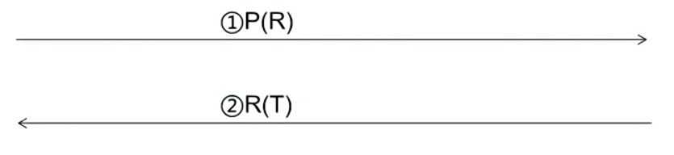
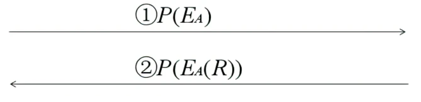
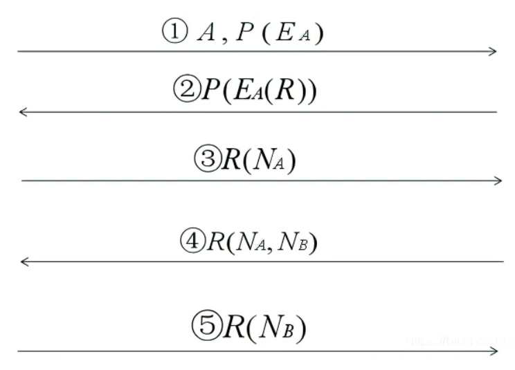
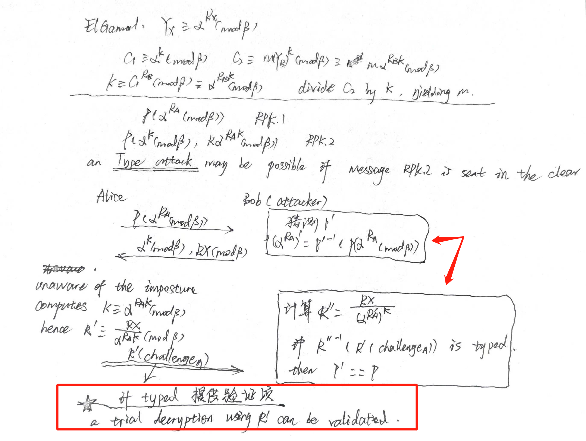
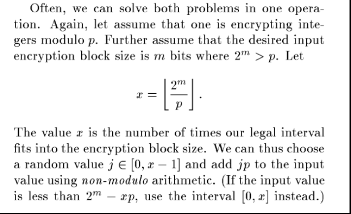
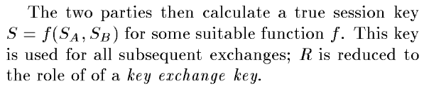
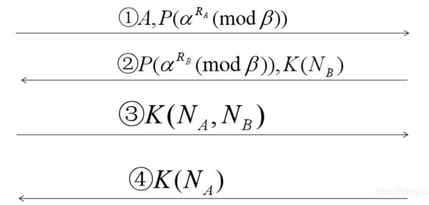

Classical cryptographic protocols based on user-chosen keys allow an attacker to mount password-guessing attacks. We introduce a novel combination of asymmetric (public-key) and symmetric (secret-key) cryptography that allow two parties sharing a common password to exchange confidential and authenticated information over an insecure network. These protocols are secure against active attacks, and have the property that the password is protected against off-line “dictionary”attacks. There are a number of other useful applications as well,including secure public telephones.
Classical key negotiation
预先共享password P，打算协商会话密钥R，T代表终端类型。用会话密钥加密返回一个终端类型表示会话密钥协商成功

attack：攻击者利用①消息解密$R’=P’^{-1}(P(R))$，再利用$R’$去测试②的消息$T’=R’^{-1}(R(T))$。由于$T$代表了终端类型，所以$T$本身是有含义的，攻击者即可通过观察$T’$是否具有代表终端类型的含义即可判断解密是否成功。
idea：由于password本身的搜索空间要小，所以攻击者可以通过穷举进行破解，然后利用一些验证性的文本来确定其破解是否正确。
EKE using public keys
Basic concepts
其中$E_{A}$代表公钥，$D_{A}$代表私钥。

advantages
R被公钥保护了起来，变得难以被破解
$E_{A’}=P’^{-1}(P(E_A)$，$E_A$本身是随机数，不能通过观察辨认出解密出的结果是否为公钥。determining whether $E_A$ is the public key used in the exchange amounts to determining whether there exists a secret key $R’$ such that $E_{A’}(R’)=E_{A}(R)$ and $R’^{-1}(R(Terminal$ $type:))$make sense
公钥是非对称的，只用公钥加密的文本和公钥本身，无法解密文本
disadvantages
- 缺少新鲜性验证，易受
replay attacks
A complete protocol

Two concrete implementations
Implementing EKE using RSA
用RSA实现重点在于关注公钥
$n$的注意细节
$n$是不能够被$P$加密后进行发送的，只能通过明文发送。因为$n$本身要求是具有两个大素数因子，这个信息将成为用于验证的信息。攻击者解密$P(n)$得到的$n’$如果有小因子就可以说明$P$的猜测是错误的，这样攻击者就可以快速进行筛选。
如果$n$没被加密可能会被密码分析
paper review: if n is available to the attacker,it could be factored;that in turn would disclose R and expose p to attack. Without knowing n,an enemy cryptanalyst would be reduced to solving a system where the only plaintext was random. That task is essentially impossible.
$e$的注意细节
- $e$要随机加1再进行加密，因为$e$一定是奇数，所以攻击者可以利用这个信息作为验证信息去进行筛选，只要$e$以1/2的几率加1，那么正常的接收方接到$e$后如果是偶数则减1即可，而攻击者则不知道这个解密出来的偶数结果本身就是错的，还是正确的奇数加1
- $e$本身不会泄露信息，$e$只要与$(p-1)(q-1)$互素即可，而一般在选择$p$和$q$的时候，都要求$(p-1)/2$和$(q-1)/2$是素数，所以$e$的候选范围很大，不会暴露$P$的信息
如果e和n都是以明文发送的话，则可能会被仿冒攻击/e次剩余攻击。
攻击者构造好e和n，其中e不满足与(p-1)(q-1)互素，则会导致整个的搜索空间坍缩。攻击者可以对消息②进行猜测P解密，然后得到密文$M’=E_{A}(R)=R^e(mod$ $n)$
此后只要验证$M’^{φ(n)/e}=1(mod$ $n)$只要满足的，就说明$P$猜测正确了
- 此方法需要依赖于e不满足基本条件$ed=1(mod(p-1)(q-1))$。因为一旦满足这个基本条件，那么$φ(n)/e$一定可以是一个整数的形式（e的逆元是d），那么对于任意的解密结果都满足等式（根据欧拉定理）
防范这种攻击的话，接收公钥的接收方可以发送一个随机数然后用e加密，并等待发送方返回一个解密后的结果，一旦e本身不满足基本条件，那么发送方一定无法进行解密，则接收方可以防范此攻击。不过多一轮通信，代价也很大。
Using the ElGamal asymmetric cryptosystem
- 公钥$α^{R_{A}}$，私钥$R_{A}$，加密消息为$(α^{k}$, $mα^{R_{A}k})$
需要注意避免类型攻击
引入了新的秘密$k$，所以要保护好$k$

思考：RSA与ElGamal的区别（原文中这样提到），ElGamal可以根据新引入的秘密k和公钥恢复密文，即使在不知道密钥的情况下

Security considerations
Partition attacks
分区攻击的本质是利用了某些验证性信息。不难理解，在破解$P$所加密过的信息时，如果知道正确的结果是什么，那么在穷举的过程中可以排除所有错误的$password$。同理，哪怕是不能知道正确结果是什么，但是知道正确结果的某些验证性属性，比如说$e$一定是奇数，那么就可以排除将近一半的错误$password$，从而达到对数级别排除字典中不匹配的$password$。这就是分区攻击的主要思想。
可能被分区攻击的地方：
- 使用$n$比特编码模数$p$，但如果$p$与$2^n$相差较大，解密出来大于$p$的可以排除掉
- 加密分组太大，导致分组高位有好多的0，这些位应该用随机数据填充
可以通过直接加一定的模数$p$来进行防御，接收方知道$p$，可以很容易地将解密值减小到合适的范围。

思考：密码协议设计不能泄露正确结果的某些验证性属性，直接泄露验证项造成off-line attack容易被发现，但是像上述两种潜在的攻击风险，令人防不胜防！这些漏洞具有很强的掩蔽性和欺骗性，很难被发现，甚至你不会意识到这能被利用造成攻击。
Tacit assumptions
- 对称或对称加密系统都不会泄露有用的信息
- 使用$E_{A}$对$R$加密，不会泄露公钥$E_{A}$和会话密钥$R$有用的信息
Strengthening EKE against cryptanalytic attacks
- 会话密钥$R$一旦泄露，不具备前向安全性
- 在挑战响应中加入生成密钥的子密钥即可
$R(challenge_{A}, S_{A})$和$R(challenge_{A}, challenge_{B}, S_{B})$，然后会话密钥通过$S=f(S_A, S_B)$得到
思考：密钥独立性设计原则，$R$只用于key exchange key，$S$用于all subsequent exchanges

EKE using exponential key exchange

将挑战应答也加入其中，最终成功分配密钥$K ≡ α^{R_{A}R_{B}}(mod$ $β)$，注意攻击者选0作为指数使得$K=1$的情况（容易检测）
$α$和$β$的取值：a range of tradeoffs between cost and security
其中注意$α$必须是$GF(β)$的原根，$β=kp+1$，其中$p$是素数。这两个元素在initial exchange阶段生成并直接明文发送
Advantages & disadvantages
优点
- 引入了非对称(公钥)和对称(密钥)加密的组合，允许共享公共密码（口令）的双方在不安全的网络上交换机密和经过身份验证的信息
- 提出一种依赖于使用密钥加密公钥反直觉概念的协议，能够抵御主动攻击、离线字典攻击
- 针对ElGamal公钥系统（$disclosing$ $encryption$ $system$）构建的EKE，提出类型攻击
缺点/不足
- 没有给出协议的安全性证明
- host/server需要保存口令的明文，某些场景下不安全
- 两方协议，可以扩展到三方场景下
- 协议的效率有待提高
- 一些理论研究尚不充分，比如$disclosing$ $encryption$ $system$